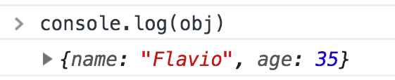

С чего начать продвижение интернет-магазина
Интернет-маркетингПоисковая оптимизация
В текущих мировых реалиях и экономических условиях предлагаем освежить в памяти алгоритм оптимизации сайта --- первые шаги в продвижении. Подробно остановимся на каждом этапе, кроме интуитивно понятных: регистрации в сервисах и установки счетчиков …
читать полностью
Начиная
Около
Cogear.JS - это генератор статических веб-сайтов, созданный с использованием Node.JS (9.x или выше) и основанный на Webpack (v4.6).
Он вдохновлен Джекилом и другими, но построен на основе новейших интерфейсных технологий.
Обеспечивает потрясающий опыт горячей перезагрузки …
читать полностью
1. Введение
Node.js - это открытая кроссплатформенная среда выполнения серверного JavaScript, которая отлично подходит для решения почти любой задачи.
Node.js запускает движок JavaScript V8, ядро Google Chrome, вне браузера. Это обуславливает высокую производительность Node.js.
Node.js-приложения выполняются в …
читать полностью
2. Краткая история
Верите или нет, но Node.js всего 10 лет.
Для сравнения: JavaScript существует на протяжении 24 лет, а веб - 30.
10 лет - это небольшой срок для технологии, однако порой кажется, что Node.js существовал всегда.
Я познакомился …
читать полностью
3. Установка
Node.js может быть установлен разными способами.
Дистрибутивы для основных платформ доступны на официальном сайте.
Очень удобным способом установки Node.js является использование пакетного менеджера. У каждой операционной системы он свой.
На macOS таковым является Homebrew, позволяющий легко …
читать полностью
4. Необходимый уровень владения JavaScript
Будучи новичком в программировании, сложно определить свой уровень мастерства.
Также сложно определить, где заканчивается JavaScript и начинается Node.js, и наоборот.
Лично я бы посоветовал хорошенько разобраться со следующими основными концепциями JavaScript перед погружением в …
читать полностью
5. Разница между Node.js и браузером
JavaScript может быть использован как в браузере, так и в Node.js.
Однако создание приложений для браузера сильно отличается от аналогичного процесса в Node.js.
Несмотря на то, что в обоих случаях используется …
читать полностью
6. Движок V8
V8 - название движка JavaScript, поддерживаемого Google Chrome. Это та самая штука, которая берет ваш JavaScript-код и выполняет его в браузере.
Другими словами, V8 представляет собой среду выполнения клиентского JavaScript. DOM и другие веб-API также предоставляются браузером.
Движок …
читать полностью
7. Запуск скриптов из командной строки
Стандартным способом запуска программ на Node.js является выполнение глобальной команды node и передача названия исполняемого файла.
Если основной файл вашего Node.js-приложения называется app.js, вы можете запустить его следующим образом:
node app …
8. Выход (завершение работы)
Существуют различные способы остановки Node.js-приложения.
При запуске программы посредством терминала, вы можете закрыть его с помощью ctrl-C, однако давайте обсудим программные способы.
Начнем с самого радикального, и скажем, почему его не следует использовать.
Основной (глобальный …
читать полностью
9. REPL
Команда node используется для запуска Node.js-скриптов:
node script.js
Если мы опустим имя файла, то попадем в режим REPL:
node
REPL (Run Evaluate Print Loop, цикл "чтение-вычисление-вывод") - это среда выполнения кода (обычно, окно терминала), которая принимает выражение …
читать полностью
10. Передача аргументов из командной строки
При запуске Node.js-приложения вы можете передать ему любое количество аргументов.
Аргументы могут быть автономными или содержать ключ и значение.
Например:
node app.js joe
или
node app.js name=joe
От этого зависит …
читать полностью
11. Вывод результатов в командную строку
Стандартный вывод посредством модуля console
Node.js предоставляет модуль console, содержащий множество очень полезных способов взаимодействия с командной строкой.
Он похож на объект console браузера.
Одним из основных методов данного модуля является console.log …
читать полностью
12. Получение данных, введенных пользователем
Как сделать Node.js-программу интерактивной?
Для этого в 7 версии Node.js представлен модуль readline: он служит для получения данных из потока для чтения, такого как process.stdin - командная строка во время выполнения Node.js-программы …
читать полностью
13. Расширение функциональности с помощью экспорта
Node.js имеет встроенную модульную систему.
Node.js-файл может импортировать функциональность из других файлов.
Когда вы хотите что-либо импортировать вы используете const library = require('./library') для импорта функциональности, экспортируемой в файле library.js, находящемся …
читать полностью
14. Пакетный менеджер
Введение
npm - это стандатный пакетный менеджер Node.js.
В январе 2017 года в npm числилось свыше 350 000 пакетов, что сделало его самым большим репозиторием кода на одном языке программирования на Земле. Можете быть уверенными в том …
читать полностью
15. Установка пакетов
При установке пакетов с помощью npm можно выбрать два типа установки:
- локальную
- глобальную
По умолчанию, когда вы вводите npm install, например:
npm install lodash
пакет устанавливается в папку node_modules в текущей директории.
После установки, npm добавляет запись …
читать полностью
16. Использование пакетов
Как использовать установленный в папку node_modules или глобально пакет?
Скажем, вы установили lodash, популярную вспомогательную JavaScript-библиотеку, с помощью npm install lodash.
Эта команда установит lodash в локальную директорию node_modules.
Для использования в программе пакет сначала нужно импортировать …
читать полностью
17. Package.json
При работе с JavaScript и Node.js вы наверняка встретите файл package.json.
Что это такое? Что вы должны о не знать? И что вы можете с ним делать?
package.json - это своего рода манифест проекта. Он …
читать полностью
18. Package-lock.json
В пятой версии Node.js был представлен файл package-lock.json.
Что это такое? Для чего он нужен, если есть файл package.json?
Задачей package-lock.json является фиксация конкретных версий установленных пакетов для обеспечения 100% работы продукта при …
читать полностью
19. Поиск версии установленного пакета
Для того, чтобы увидеть последние версии установленных пакетов, включая их зависимости, необходимо выполнить npm list.
Например:
❯ npm list
/Users/joe/dev/node/cowsay
└─┬ cowsay@1.3.1
├── get-stdin@5.0.1
├─┬ optimist@0.6 …
20. Установка старой версии пакета
Вы можете устанавливать старые версии пакетов с помощью спецификатора @:
npm install <package-name>@<version>
Например:
npm install cowsay
установит версию 1.3.1 (последнюю на момент написания этих строк).
Установим версию 1.2.0:
npm install …
21. Обновление зависимостей
При установке пакета с помощью npm install <package-name\>, в папку node_modules загружается последняя доступная версия пакета, запись о пакете добавляется в package.json и package-lock.json, находящиеся в текущей директории.
npm также устанавливает последние доступные версии зависимостей …
читать полностью
22. Семантическое версионирование
Концепция семантического версионирования очень проста: все версии имеют три цифры: x.y.z:
- первая цифра - основная (главная, мажорная) версия
- вторая цифра - второстепенная (минорная) версия
- третья цифра - патч (патчевая версия)
Когда вы делаете новый релиз, вы не присваиваете …
читать полностью
23. Удаление пакета
Для удаления пакета, установленного локально (с помощью npm i <package-name\> в папку node_modules), запустите npm unistall <package-name\> из корневой директории проекта (директории, в которой находится папка node_modules).
Если добавить флаг -S или --save, то из package.json …
читать полностью
24. Глобальные и локальные пакеты
Основное отличие между локальными и глобальными пакетами состоит в следующем:
- локальные пакеты устанавливаются в директорию, в которой вы запускаете
npm install <package-name\>, и помещаются в папку node_modules, находящуюся в этой директории - глобальные пакеты устанавливаются в …
25. dependencies и devDependencies
При установке пакета посредством npm install <package-name\>, вы устанавливаете его как зависимость (dependency).
Запись об установленном пакете добавляется в раздел dependencies файла package.json.
При добавлении флага -D или --save-dev вы устанавливаете зависимость для разработки, запись …
читать полностью
26. Запуск пакета с помощью npx
npx - это очень мощная команда, доступная начиная с версии 5.2, представленной в июле 2017 года.
Если вы не хотите устанавливать npm, то можете установить npx как самостоятельный пакет.
npx позволяет запускать сборку проекта …
читать полностью
27. Цикл событий
Цикл событий - это важнейшая часть Node.js.
Почему? Потому что это обуславливает асинхронность Node.js, т.е. то, почему он имеет неблокирующий ввод/вывод.
Код в Node.js выполняется в одном потоке. Одновременно выполняется только одна задача …
читать полностью
28. Process.nextTick()
Одной из важных частей цикла событий Node.js является process.nextTick().
Каждый раз, когда цикл событий делает полный круг, ставится особая отметка.
При передаче process.nextTick() определенной функции мы указываем движку вызвать эту функцию перед началом следующего …
читать полностью
29. SetImmediate()
Когда вам необходимо выполнить код асинхронно, но максимально быстро, одним из способов это сделать является использование функции setImmediate().
setImmediate(() => {
// код
})
Функция, переданная setImmediate() в качестве аргумента - это колбек, выполняемый на следующей итерации цикла событий.
Чем setImmediate() отличается от …
30. Таймеры (счетчики)
setTimeout()
При написании JS-кода может возникнуть необходимость отложить выполнение функции.
Это как раз то, что делает setTimeout(). Вы определяете функцию с отложенным выполнением и указываете время в миллисекундах:
setTimeout(() => {
// запустить через 2 секунды
}, 2000)
setTimeout(() => {
// запустить через …
31. Асинхронность и функции обратного вызова
Асинхронность в языках программирования
Компьютеры являются асинхронными.
Асинхронность означает, что вещи могу происходить независимо от основного потока программы.
В современных компьютерах каждая программа запускается в определенное время, и затем ее выполнение останавливается, чтобы другая …
читать полностью
32. Промисы
Введение
let done = true
const isDoneYet = new Promise((resolve, reject) => {
if (done) {
const workDone = 'Here is the thing I build'
resolve(workDone)
} else {
const why = 'Still working on something else'
reject(why)
}
})
const checkIfItsDone = () => {
isItDoneYet
.then(ok => {
console …
33. Async/Await
Прошло совсем немного времени с момента появления промисов в 2015 году, а уже в 2017 асинхронный JavaScript был еще больше упрощен благодаря синтаксису async/await.
Асинхронные функции - это комбинация промисов и генераторов, обычно, их называют высокоуровневой абстракцией …
читать полностью
34. Event Emitter (обработчик событий)
Если вы работали с JavaScript в браузере, то знаете, что большая часть взаимодействия с пользователем осуществляется через обработку событий: клики мышкой, нажатие клавиш клавиатуры, движение мышки и т.д.
На стороне сервера Node.js предоставляет …
читать полностью
35. Создание HTTP-сервера
Вот пример простого HTTP-сервера:
const http = require('http')
const port = process.env.PORT || 3000
const server = http.createServer((req, res) => {
res.statusCode = 200
res.setHeader('Content-Type', 'text/html')
res.end('<>Hello, World!<>')
})
server.listen(port, () => {
console.log …
36. Отправка HTTP-запросов
Отправка GET-запроса
const https = require('https')
const options = {
hostname: 'whatever.com',
port: 443,
path: '/todos',
method: 'GET'
}
const req = https.request(options, res => {
console.log(\\`statusCode: ${res.statusCode}\\`)
res.on('data', d => {
process.stdout.write(d)
})
})
req …
37. Отправка POST-запроса
Существует множество способов отправки POST-запроса в зависимости от уровня абстракции.
Одним из простейших способов это сделать является использование библиотеки Axios.
const axios = require('axios')
axios
.post('https://whatever.com/todos', {
todo: 'Buy the milk'
})
.then(res => {
console …
38. Получение данных из тела запроса
Вот как можно извлечь данные, содержащиеся в теле запроса в формате JSON.
Допустим, мы получили такой запрос:
const axios = require('axios')
axios.post('https://whatever.com/todos', {
todo: 'Buy the milk'
})
Серверный код выглядит …
читать полностью
39. Файловый дескриптор
Перед тем, как вы сможете взаимодействовать с файлом, находящимся в файловой системе, вы должны получить дескриптор этого файла.
Файловый дексриптор - это то, что возвращается методом open() модуля fs:
const fs = require('fs')
fs.open('/Users/joe/test …
40. Статистика файла
Каждый файл содержит перечень информации, которую мы можем изучить с помощью Node.js.
В частности, посредством метода stat() модуля fs.
Данный метод вызывается с двумя аргументами: путем к файлу и колбеком. Колбек, в свою очередь, содержит два …
читать полностью
41. Путь к файлу
Любой файл имеет адрес или путь.
На Linux и macOS путь может выглядеть так:
/Users/joe/file.txt
А на Windows так:
C:\\Users\\joe\\file.txt
Следует быть очень внимательным при работе с путями в …
читать полностью
42. Чтение файла
Простейшим способом прочитать содержимое файла является использование метода fs.readFile(), которому передается путь, кодировка и колбек, вызываемый с содержимым файла (и ошибкой):
const fs = require('fs')
fs.readFile('/Users/joe/test.txt', 'utf8', (err, data) => {
if (err …
43. Запись файла
Простейшим способом записи данных в файл является использование метода fs.writeFile().
Например:
const fs = require('fs')
const content = 'Some content!'
fs.writeFile('/Users/joe/test.txt', content, err => {
if (err) {
console.error(err)
return
}
// файл записан успешно …
44. Работа с директориями
Модуль fs предоставляет множество методов для работы с каталогами.
Проверка наличия директории
Используйте fs.check() для определения существования директории и возможности получить к ней доступ.
Создание новой директории
Используйте fs.mkdir() или fs.mkdirSync() для создания …
читать полностью
45. Модуль fs
Модуль fs предоставляет множество полезных методов для доступа и взаимодействия с файловой системой.
Его не нужно устанавливать. Будучи частью ядра Node.js, он может использоваться по требованию:
const fs = require('fs')
Среди методов модуля fs можно назвать …
читать полностью
46. Модуль path
Данный модуль предоставляет множество полезных методов для доступа и взаимодействия с путями файлов.
Его не нужно устанавливать. Будучи частью ядра Node.js, он может использоваться по требованию:
const path = require('path')
Данный модуль содержит свойство path.sep …
читать полностью
47. Модуль os
Данный модуль предоставляет множество функций для получения информации об операционной системе и компьютере, на котором запущена программа.
const os = require('os')
Существует несколько полезных свойств, содержащий важную информацию о файлах:
- os.EOL - содержит последовательность разделителей строк. Таковыми …
48. Модуль events
Модуль events предоставляет класс EventEmitter, предназначенный для обработки событий.
const EventEmitter = require('events')
const door = new EventEmitter()
Обработчик событий сам вызывает два события:
- newListener - при добавлении обработчика
- removeListener - при удалении обработчика
Рассмотрим наиболее полезные методы данного модуля …
читать полностью
49. Модуль http
Модуль http ядра Node.js является ключевым модулем для работы с сетью.
Он добавляется следующим образом:
const http = require('http')
Данный модуль предоставляет некоторые свойства, методы и классы.
Свойства
http.METHODS
Данное свойство содержит список поддерживаемых HTTP-методов …
читать полностью
50. Буфер
Что такое буфер?
Буфер - это место в памяти. JavaScript-разработчики не знакомы с этой концепцией, по крайней мере, они знакомы с ней намного хуже, чем разработчики, пишущие код на C, C++ и Go, которые работают с памятью каждый день …
читать полностью
51. Поток
Что такое поток?
Поток - одна из главных причин высокой производительности Node.js-приложений.
Это способ чтения/записи файлов, работы с сетью или любого другого обмена информацией между конечными устройствами.
Потоки не являются уникальными для Node.js. Они появились в …
читать полностью
52. Разница между средой для разработки и средой для продакшна
Вы можете определять разные настройки для среды разработки и продакшн-среды.
По умолчанию Node.js запускает среду для разработки. Вы можете изменить это поведение с помощью переменной среды NODE_ENV, присвоив ей …
читать полностью
53. Обработка ошибок
Ошибки в Node.js обрабатываются с помощью исключений.
Создание исключения
Исключение создается с помощью ключевого слова throw.
throw value
При достижении данной строки кода выполнение программы останавливается и управление передается ближайшему обработчику исключений.
Как правило, в клиентском …
читать полностью
54. Отображение объекта в консоли
Когда вы набираете console.log в JavaScript-программе, запущенной в браузере, то получаете что-то вроде этого:

При нажатии на стрелочку, лог раскрывается и вы видите свойства объекта:

В Node.js происходит тоже самое.
Это выглядит не …
читать полностью